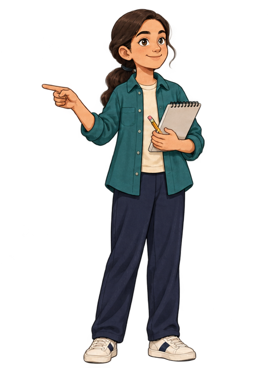
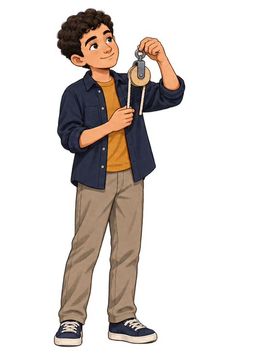

الوحدة 01
نفكّر بالتكنولوجيا
خطوتك الأولى في رحلة التكنولوجيا. اختر درسًا لتفتح صفحته التمهيدية.


دروس الوحدة
درسان، وبداية جديدة للاكتشاف
خطوتك الأولى في رحلة التكنولوجيا. اختر درسًا لتفتح صفحته التمهيدية.


درسان، وبداية جديدة للاكتشاف